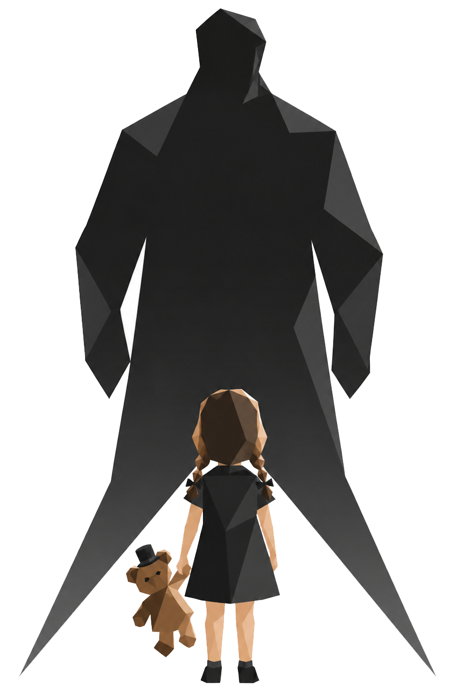

ПО ТУ СТОРОНУ ПРИВЫЧНОГО
У каждой истории
— твой финал.
Миры, в которых привычное даёт трещину.
Люди, которым приходится заглянуть внутрь.
И истории, которые остаются с вами.
трансгрессивная проза · сатира · хоррор · антиутопия · философия · фантастика · контркультура ·
Черновики
Об авторе

Первое знакомство
Все произведенияСначала — знакомство. Здесь появятся бесплатные фрагменты произведений.
Пока можно прочитать аннотации и заглянуть в работу над рукописями.
ЗАПИСКИ НА ПОЛЯХ
Прежде чем
стать книгой.
Здесь текст ещё меняется. Герои спорят с замыслом, сцены находят своё место, а у истории появляется голос.
Мастерская черновиков и будущих книг.
Весь творческий планНА ПИСЬМЕННОМ СТОЛЕСОСТОЯНИЕ РУКОПИСЕЙ
01
ЧЕРНОВИК · ЧАСТЬ ПЕРВАЯ «МАЛЬЧИК»
Дети Крампуса: Тени Йоля
13 328 / 20 000 слов67%
Остальные части
II. Йоль0 / 35 000 слов
III. Чужой среди своих0 / 35 000 слов
02
ЧЕРНОВИК · РОМАН
Орден на сдачу
13 448 / 60 000 слов22%
03
НА ОЧЕРЕДИ · ЦИКЛ НОВЕЛЛ
Iam sero est
19 145 / 65 000 словРабота приостановлена
ГОТОВАЯ ПРОЗА · ЧИТАТЕЛЬСКИЙ КРУГ
Истории, в которых
можно остаться.
Место для завершённых произведений. От первой страницы до последней — в привычном, спокойном пространстве для чтения.
Полные текстыКнижное оформлениеПоддержка автора
РАЗДЕЛ ГОТОВИТСЯ
Полные произведения появятся здесь после завершения работы. Доступ планируется по подписке через Boosty.
Ознакомительные фрагменты останутся бесплатными.